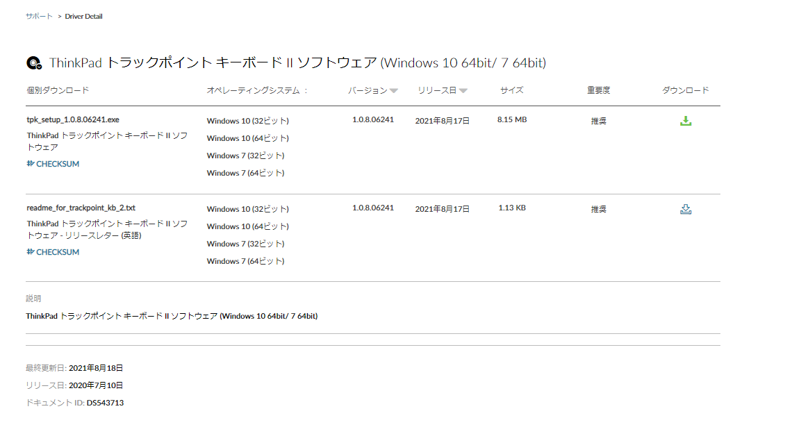

ThinkPad ワイヤレス キーボードII でトラックポイントの調整をする方法
以前はデバイスマネージャーから設定した記憶があったが、ユーティリティをインストールする必要があるようだ。
設定手順
ThinkPad トラックポイント キーボード II ソフトウェアを下記からダウンロードする。

exeファイル実行後、適当にインストールして、キーボードのプロパティから変更する

関連しているかもしれない記事
- speedtest-cliを使用してWifi環境の回線速度の可視化
- ThinkPad X13 Gen 2 AMD を購入しました
- RSSがないサイトの更新情報を受け取る方法
- Excelのグラフで横軸を1時間ごとのグラフにする方法
- 新型コロナウイルス感染症（COVID-19） ワクチン2回目摂取の体温推移